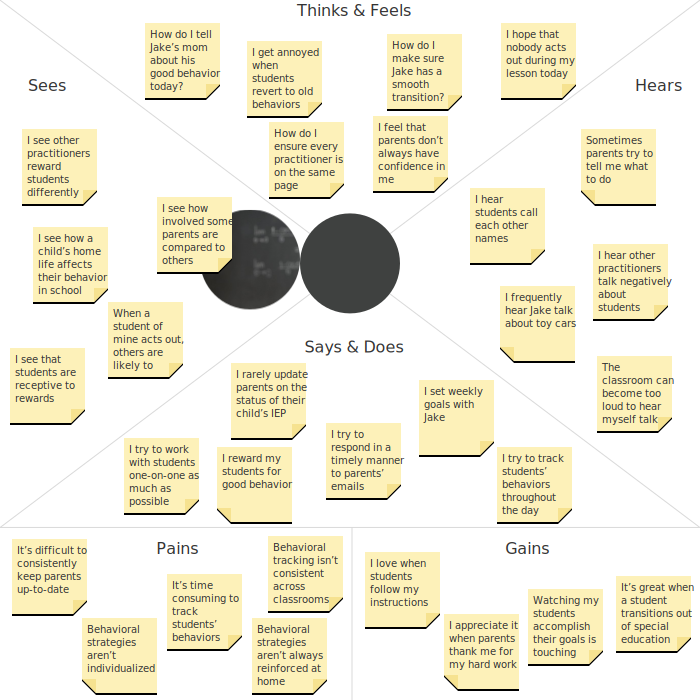

Overview
Some children who are in special education for behavioral support are likely to make progress on managing their behaviors. When they do, a transition out of special education can help them continue to build the independence that will improve their long-term outcomes. Strategies for supporting these transitions are not always consistent across classrooms and are difficult to customize to the individual needs of each child. As a result, transitioned students’ self-awareness and self-management of their behavior is not always developed enough for them to navigate the regular classroom with less support and structure.
To combat this issue, we want to design a child-centered intervention that is collaboratively reinforced by parents and practitioners. During school, a child would wear a smartwatch to discreetly monitor and catalog their behavior. Using a tablet, practitioners would periodically prompt the smartwatch to display behavioral reminders, tips, and reflective questions. After the child submits answers to the reflective questions, practitioners would review their answers with the child. At the end of each day, practitioners would share a child’s behavioral progress with their parents to promote the reinforcement of positive behaviors at home.
Prior Research
In its first iteration, Lilypad was merely a behavioral data collection tool. For two years, it was used by practitioners in 4 classrooms across 3 schools to record and monitor the behavioral progress of students in both special and regular education. During the deployment of Lilypad, Dr. Marcu and other members of the research team conducted naturalistic observation, interviews, and focus groups with practitioners to evaluate the design requirements and constraints of Lilypad. Their research led to the following findings:
- Appropriate social behavior should be actively taught and reinforced to students
- A small number of rules should be clearly communicated and consistently enforced in the classroom
- Students want to be involved with their behavioral data on a daily basis
- Students should receive frequent reminders and feedback on their behavioral progress
- Students should consistently receive positive behavior reinforcers
- Students should understand the connection between receiving rewards and their behavior
- Lilypad should not increase the practitioner's workload
Moreover, their research revealed several challenges of transitioning students from special education to regular education. The challenges are as follows:
- Oftentimes, students do not have the opportunity to take an active role in monitoring their behavior
- The methods used to track the progress of transitioning students are not always consistent across classrooms
- Many class-wide intervention methods are difficult to customize to the individual needs of each student
- Special education practitioners are unsure which methods best monitor and support the progress of transitioning students
Research Question
From these challenges, we identified a potential for Lilypad to be more than a behavioral data collection tool. We believed that extending Lilypad’s functionality to put students with special needs at the center of collecting and monitoring their behavioral data could better prepare them for their transition into regular education. To validate and explore this idea, we formed the following research question:
RQ1 - How can a child-driven intervention support the transition process?
Literature Review
To address RQ1, we conducted a literature review. Our key findings were as follows:
- A child’s behaviors and social skills should be the focus of their intervention
- A child’s behaviors and social skills are most indicative of their readiness to transition out of the special education classroom (Wilkes et al., 1979).
- An individualized intervention dramatically increases a child’s positive behavior
- A classroom-wide token economy based on a levels system that was rendered ineffective for two students due to their inappropriate verbalizations was made effective by implementing a self-monitoring intervention (Cavalier et al., 1997). Increasing the individualization provided by the system for students with behavior difficulties resulted in a substantial reduction in inappropriate verbalizations.
- A child’s intervention should nudge them to be their own agent of change
- One common thread throughout successful game dynamics is that they all work to increase a feeling of agency and ownership in the user (Stott et al., 2013).
- A child’s intervention should promote self-management
- Self-management, when a student keeps track of their own behavior and takes responsibility for their own behavior, is effective for increasing knowledge, use of self-management behaviours, self-efficacy, responsivity, communication, task performance, and social interaction skills (Koegel et al., 1992; Barlow et al., 2002; Koegel et al., 1999)
- Self-monitoring can positively affect a child’s school and home life
- Children can benefit from self-monitoring, a subset of self-management, outside of the setting that the self-monitoring procedure is being implemented in (Koegel et al., 1992).
- The benefits of self-monitoring are long lasting
- Self-monitoring procedures can gradually be faded out and students will continue to self-manage with little to no assistance (Koegel et al., 1999).
- A child can use a smartwatch to quickly and discreetly track their behavioral progress
- The usage of a smartwatch can be discrete and users are able to view and enter data faster on a smartwatch than on the phone (Årsand et al., 2015).
Competitive Analysis
As result of our literature review, we decided to incorporate a smartwatch into the child-centered intervention. To better understand how smartwatches are being used to track and improve the behavior of their users, we conducted a competitive analysis. Our findings were as follows:
- Interactions are minimal and scheduled
- Users can set and edit goals
- Users can quantitatively track their progress
- Users are held accountable and sent reminders when their progress is off track
- Users are sent motivational tips throughout the day
Interviews
To further explore our approach and assess the feasibility of using a child-driven intervention to support the transition process, we conducted interviews with practitioners, specifically special education teachers and child psychologists.
Target Users
To help us determine what Lilypad should do and how it should behave, we used our findings from the literature review as well as preliminary findings from the interviews to create personas and empathy maps of the three user groups we’re designing for: children with special needs who are preparing to transition to regular education, parents of those children, and teachers of those children.
Personas
Jake
Is 9-years-old and was diagnosed with high-functioning autism at 3 years old. He is in 4th grade and is preparing to transition from special education to regular education.
- Behaviors
- Knows right from wrong, but often needs to be reminded of classroom rules
- Very passionate about cars and loves talking about them with others, but doesn’t always know when people want him to stop
- Keeps his hands to himself during class
- Shares with his classmates
- Frustrations
- His mom always asks him how school went, but he doesn’t know what to tell her
- The rules at school are different than his mom’s rules at home
- When his teacher is helping him out, his classmates always look at him
- Goals
- Is in the same classroom as his friends
- Doesn't stand out when placed in a new classroom
- Is able to tell when he should stop his behavior
- Consistently goes through a full class without getting pulled aside by the practitioners
Candice
Is 35-years-old and the single mother of Jake. She is a Pediatric Oncology nurse and often works long hours.
- Behaviors
- Attends as many parent-teacher meetings as possible with her irregular work schedule
- Works with Jake at home to promote appropriate behavioral management
- Always does what she thinks is best for Jake
- Emails Jake's practitioners once a week to stay updated on his behavioral progress
- Frustrations
- Isn’t always aware of the behavioral management techniques that Jake is using in school
- Doesn’t always know how to reinforce the behavioral management techniques that Jake is learning in school at home
- Finds it difficult to receive behavioral and academic updates from Jake’s teaching staff on a regular basis, along with receiving tips for at home behavioral management techniques
- Needs help understanding Jake’s Individualized Education Program and how it translates into action
- Goals
- Stays up-to-date on Jake’s behavioral progress at school
- Consistently reinforces the behavioral management techniques Jake is learning at school at home
- Jake has a smooth transition into the regular education classroom and is accepted by his classmates
Mrs. Cramer
Is 47-years old and is a special education teacher. She received a masters degree in special education and has 20 years of experience working in a special education classroom.
- Behaviors
- Works with her students one on one to make sure they get the individualized help they need to succeed
- Works with Jake at home to promote appropriate behavioral management
- Uses paper and Microsoft Excel to track students’ notable positive and negative behaviors throughout the day
- Creates a weekly behavior report for each student to bring home to their parents
- Frustrations
- Behavioral tracking of the special needs students she works with is inconsistent implemented across classrooms and by practitioners
- Has a difficult time responding to parents inquires in a timely manner
- Finds it time-consuming to accurately track the behavior of all of her students
- Finds it difficult to customize intervention methods to the individual needs of each student
- Goals
- Is able to provide her students with individualized attention and feedback that helps them meet their personal behavioral goals
- Feels confident updating student’s parents on their child's behavioral progress
- Efficiently tracks students’ behavioral progress so that she can reflect on how they've improved over time
- Helps her students achieve independence from the special education staff
- All of her students feel comfortable in her classroom
Empathy Maps
Jake
Candice
Mrs. Cramer

Design Requirements
In preparation for the ideation stage, we established design requirements to ensure that our solution will align with our user groups and support their needs. The requirements are as follows:
- Promotes children’s independence
- Children self-monitor their behavioral progress by being at the center of its collection and analysis.
- Uses child-centered goal setting
- Children work with their practitioners and parents to set their behavioral goals. A child’s goals are regularly updated and reflected upon.
- Uses positive reinforcement
- Uses positive reinforcement, such as a rewards system, to change children’s behavior rather than negative reinforcement. Every step a child takes, good or bad, is treated as progress towards their goals.
- Is customizable to the individual needs of both practitioners and children
- Practitioners can customize the intervention to complement their class curriculum and school schedule. Additionally, the intervention can be individualized to support the behavioral needs and varying motor, cognitive, and visual ability of each child.
- Subtly collects children’s behavioral data throughout the school day
- The intervention is timely, brief, and unavoidable. The intervention positively affects the learning environment of the classroom and allows children to track their behavioral progress without drawing the attention of their classmates.
- Provides consistent individualized support for children
- Children receive frequent reminders and feedback on their behavioral progress throughout the school day.
- Is implemented consistently by practitioners
- Practitioners use identical techniques to record and monitor children’s behavioral progress as well as to reinforce positive behaviors.
- Children’s behavioral data is accessible to practitioners across classrooms
- Children’s behavioral data is easily accessible across classrooms. Practitioners can stay up-to-date on a child’s behavioral progress when they are not working directly with that child.
- Creates an open communication line between practitioners and parents
- Practitioners and parents can easily communicate with one another and stay up-to-date on their child’s behavioral progress both in and out of school.
- The intervention supports the reinforcement of positive behaviors at home
- Everyday parents are updated on their child’s behavioral progress and provided with tips for reinforcing the behavioral management techniques their child is learning in school at home. Parents understand how their Child’s IEP translates into action.
Next Steps
We’ve finished conducting interviews and have begun analyzing the data we collected. Following our analysis, we will use the new findings, along with our previous findings, to finalize our design requirements and ideate a solution. Stay tuned for the updates to come!